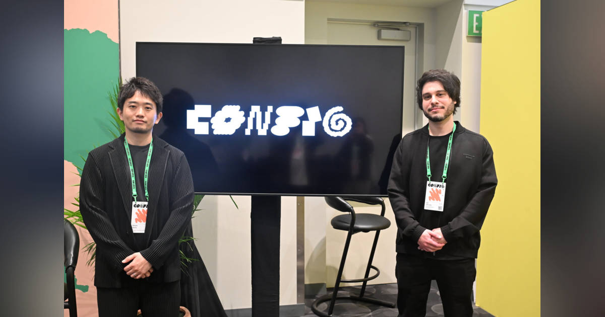
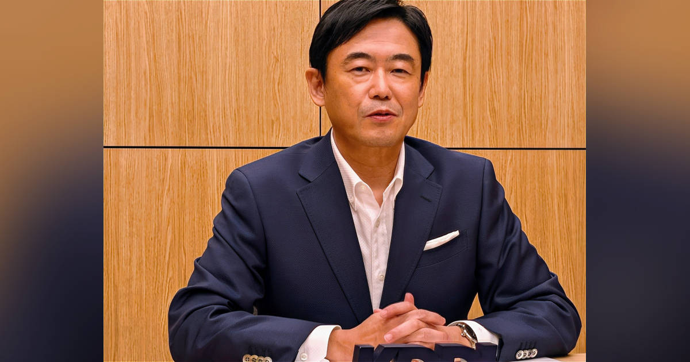
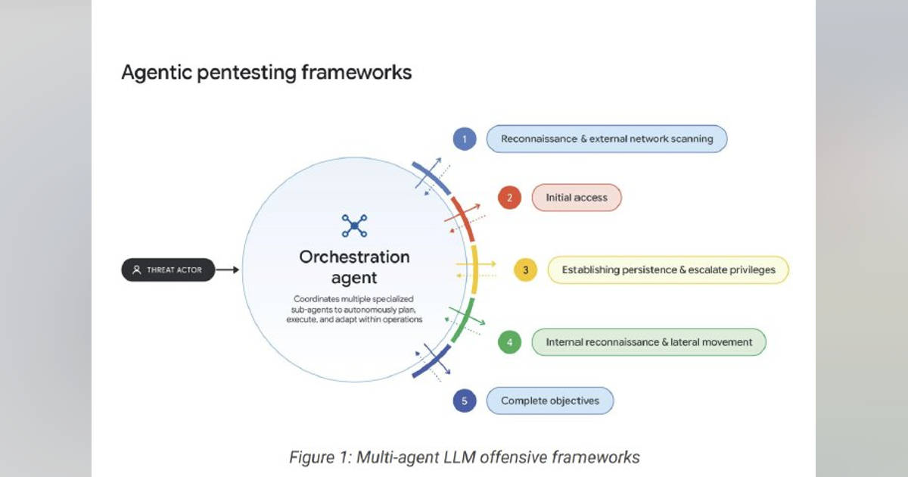

【保存版】こどもNISAで変わる「お金の増やし方」15選
発行日時：2026-11-16 05:30:00 JST
NewsPicks原文を読む
あなたに関係ありそうな理由
2027年からの制度を家族で使うか考えるとき、投資枠だけでなく口座の選び方や引き出し条件、贈与も一度に確認できます。子どもの教育費や長期の資産形成を検討する方に関係する内容です。
概要
NewsPicks編集部は、2027年1月に始まる予定の「こどもNISA」について、口座選びから贈与まで15の注意点を整理した。対象は0歳から17歳で、その年の1月1日時点の年齢で判定する。年間投資枠は60万円、非課税で保有できる商品の取得額の上限は600万円。大人のNISAのように個別株を買う成長投資枠はなく、積立投資が基本となる。
投資枠をまとめて使えるわけではない。お年玉や祝い金を一度に受け取っても、金融機関によってはボーナス月の増額設定などがあるものの、原則は積立で投資する。年間60万円のうち使わなかった分は翌年へ繰り越せない。一方、600万円の総枠は、売却した商品の取得額分が翌年以降に復活する。年間投資枠と生涯の上限は別の仕組みだ。
記事の試算では、児童手当を0歳から18年間、全額投資信託に積み立て、年5％で運用できた場合、18歳時点で約385万円になる。入金額は234万円で、増加分は約150万円という計算だ。別の試算では、0歳から月5万円を10年間積み立て、その後18歳まで運用すると約1140万円になる。ただし年5％は仮定であり、手数料や相場変動を考慮しない試算で、元本保証はない。
口座を開く金融機関は慎重に選びたい。別の会社へ移るには口座を解約して開き直す必要があり、それまでの利益に課税される場合がある。18歳未満は原則としてクレジットカード積立を利用できず、親の口座や親権者全員の同意、子どもの銀行口座など、会社ごとに条件も異なる。2027年1月1日に9歳なら、年60万円を10年間積み立てることができず、総枠600万円を使い切れない。
払い出しにも年齢に応じた制約がある。小学校6年の12月までは原則引き出せず、その後高校3年の12月までは教育費や生活費など子ども本人のための支出に限られる。18歳以降は残高が大人のNISAへ移るが、600万円は生涯枠1800万円の内数で、別枠が加算されるわけではない。贈与税の基礎控除110万円は、複数の贈与者から受け取った合計で判定する。記事は、多くの家庭では親自身のNISAを優先し、余裕があれば金融教育や長期投資などに活用する考え方を示している。
仕事や会話で使える一言
「満額を目指す前に、親の枠や引き出す時期も含めて家族で確認したいですね。」
メルカリ、アプリ開発「2日→数十分」へ 直面したAI時代の“意外な課題”とは？
発行日時：2026-11-16 07:00:00 JST
NewsPicks原文を読む

あなたに関係ありそうな理由
生成AIで画面制作を速めたあと、レビューと品質保証がどこに残るのかを具体例で追えます。AI開発ツールを業務に取り入れるチームや、開発工程を見直す方に参考になります。
概要
メルカリのプロダクト開発では、生成AIを使ってアプリの画面設計や試作にかかる時間を短縮している。ITmediaの取材で、プロダクト責任者の成田元樹氏とデザイン組織のアブドラ氏は、従来1〜2日かかった画面作りが、数十分で形になる場合があると説明した。デザイナーは、余白や部品の配置などの反復作業をAIに任せ、画面の狙いや利用体験を考える時間を増やしている。
AIの導入で作業の順序も変わる。小さなチームが企画から実装までを担う動きがあり、デザインとエンジニアリングの境目も薄くなっている。数百人がデザインツールを使う中、画面を作るスピードそのものより、プロダクトに合う案を選び、仕様に落とす役割が重要になる。AIは案をすぐ出せても、何を採用するか、利用者にとって分かりやすいかは人が判断する必要がある。
効率化の次に見えてきた課題が、人によるレビューの負荷だ。アプリでは週ごとに何百もの画面が変わり、AIが生成した画面やコードも、確認を経てからリリースされる。制作時間を短くできても、確認する側の作業が増えたり、レビュー待ちが長くなったりすれば、開発全体の速度は上がらない。NewsPicksのコメントにも、レビュー負荷や、AIの提案をどこまで自動検査するかを考える意見があった。
メルカリはデザインシステムのルールを仕様ファイルにまとめ、AIが会社固有の部品や設計方針を参照できるようにしている。デザイナーはClaude Codeのスキルを使い、必要な設計知識を与えたうえで、仕様の作成や更新を補助させる。成田氏は、コードから部品の使われ方を読み取り、仕様書の更新を自動化できる可能性にも触れた。AIに一からルールを推測させず、既存の設計意図を明文化している点が特徴だ。
取材では、新しいAIツールを使う前のセキュリティガイドラインや審査にも言及された。AIを導入すれば自動で品質が上がるという説明ではなく、作業の速さと、確認・安全の仕組みを並行して整える必要があるという話だ。今後は制作時間だけでなく、レビューに要する時間、差し戻しの量、公開後の不具合がどう変わるかを見たい。AIで作る人が増えた結果、確認工程をどう設計するかがプロダクト開発の新しい課題になっている。
仕事や会話で使える一言
「速く作るだけでなく、レビュー待ちや修正回数まで見たいですね。」
【NYT】世界が愛する日本アニメ、熱狂の裏の「死角」
発行日時：2026-11-16 05:30:01 JST
NewsPicks原文を読む
あなたに関係ありそうな理由
世界的な人気や市場予測の一方で、制作人材、競争、ヒット予測の難しさも扱っています。アニメを文化輸出やコンテンツ産業として見ている方に、成長と制作現場の両面を考える材料になります。
概要
ニューヨーク・タイムズの記事は、日本アニメが世界のポップカルチャーで存在感を高める一方、産業の成長を支える制作現場に課題があると伝える。2026年のニューヨーク・コミコンでは、アニメがコミックやスーパーヒーローに代わって会場の中心を占めていた。記事が紹介する推計では、世界の配信視聴者の約3分の1がアニメを見ており、市場は2023年の320億ドルから2030年に570億ドルへ伸びる見通しだ。
日本にとっては、人口減少が進む中で、文化コンテンツを海外へ届ける機会になる。記事は、日本のコンテンツの海外収入が半導体や鉄鋼など従来型輸出を上回る規模になったと説明する。ソニーでは音楽やアニメなどエンターテインメント部門がグループ利益の約7割を生み、家電メーカーからコンテンツ企業へ重心を移してきた。同社はKADOKAWA、Crunchyroll、バンダイナムコなどへの投資を進め、アニメやゲームを事業の柱に置いている。
ただし、成長を見込んで投資すれば、人気作を確実に生み出せるわけではない。記事が挙げる例では、ソニーは『KPop Demon Hunters』の配信権を、作品がヒットする前にNetflixへ売却していた。どの作品が世界的な成功を収めるかは事前に読みづらく、制作費や配信権の判断には不確実性が残る。ソニーの2026年度営業利益は過去最高の92億ドルに達したが、単年の好業績だけで将来の成功が保証されるわけではない。
競争相手は日本国内にとどまらない。韓国や中国のスタジオも制作規模を拡大し、国際市場で作品を届けている。記事は、作品の質を高めるには時間と作り手が必要だと紹介し、スタジオポノックでは一本の映画に10万枚を超える手描きのフレームを費やす場合があるという。供給を急いで作品数を増やすだけでは、独自性を損ねるおそれがある。
業界の拡大には、アニメーター不足や労働条件といった制作現場の問題もある。NewsPicksの表示コメントでは、原作となる漫画やライトノベルの供給、利益目標が創作の独自性に与える影響、作り手へ収益を還元する必要性が論じられた。これらは読者の意見で、NYTの記事が報じた市場数字とは別に扱いたい。人気を一過性のブームで終わらせず、作品の企画力と制作体制を持続させられるかが、日本のコンテンツ産業の先を左右する。
仕事や会話で使える一言
「市場の伸びだけでなく、作り手が続けられる環境も成長の条件ですね。」
KDDI松田社長に聞くAI戦略、通信指標の転換からAI分散処理の考え方まで
発行日時：2026-11-16 00:00:00 JST
NewsPicks原文を読む

あなたに関係ありそうな理由
KDDIのAIデータセンターや通信網の使い方を、社長の構想とすでにある設備数に分けて確認できます。通信・データセンター・店舗などの事業投資に関わる方に、実装前の論点が分かります。
概要
ケータイ Watchは、KDDIの松田浩路社長にAIデータセンター、通信網、店舗などの活用を聞いた。大阪・堺のAIデータセンターは、モデルを学習させる設備から、実際のサービスでAIを動かす推論の領域へ進む。松田氏は、次世代光通信のAPNとの実証や、他地域への展開にも意欲を示した。設備を建てるだけでなく、企業や地域でAIをどう使うかを試す基盤にしたいという。
分散処理の拠点として、KDDIの基地局約10万カ所やローソン約1万4000店を活用する構想も話題になった。データを利用者に近い場所で処理できれば、遅延を抑えるなどの利点が見込める。ただし、松田氏は拠点数を並べるだけでは足りず、近くで処理する必然性や具体的な用途が必要だと述べる。基地局や店舗へAI処理設備を設置する計画が決まったという話ではなく、検討を続けている段階だ。
通信品質について、KDDIはOpensignalの評価で5期連続1位になった。松田氏は競合他社との差が小さく、接戦が続いているとも語る。通信速度やつながりやすさを磨くだけでなく、AIの処理が終わるまでの時間を新しい評価軸にすべきか、技術陣と話しているという。利用者のスマートフォンからAIサービスへデータを送る上り通信は伸びているが、現状では通信全体の中で大きな割合ではないとの説明だった。
フィジカルAIについては重要な分野としながらも、現在の3年間の中期経営計画には入れていない。本格普及はもう少し先と見ており、実装の形が具体化してから打ち出す考えだ。グループのELYZAロボティクス、堺のGPU、KDDIの通信網を組み合わせ、ロボット側で処理する範囲とデータセンターへ送る処理を見極める。垂直統合の試みと外部企業との連携を組み合わせる方針も示された。
松田氏は、AIエージェントに商品やサービスを見つけてもらえるかが、企業にとって新たな課題になると指摘した。KDDIはauショップの接客ノウハウなどを生かし、人や場の知見をAIに組み込みたいという。個人向けサービスBuffmeeでは、AIが公開情報を広く学ぶようになった後、どんな独自価値を提供するかが課題だとも語った。インタビューで示されたのは設備の保有数や現在の評価と、将来に向けた構想の両方だ。実際のユースケースがどこまで具体化するかを追いたい。
仕事や会話で使える一言
「拠点数だけでなく、処理を近くに置く具体的な用途まで見たいですね。」
Google、人間の関与なしに脆弱性を見つけて悪用するAIフレームワークを初めて観測 GTIGのAI脅威レポート
発行日時：2026-11-16 23:02:13 JST
NewsPicks原文を読む

あなたに関係ありそうな理由
脆弱性を探すAIの具体例と、攻撃側の自動化が防御や更新作業へ及ぼす影響を確認できます。情報システムやソフトウェアの保守に関わる方に、パッチ適用や開発環境の管理を考える材料です。
概要
GoogleのThreat Intelligence Group（GTIG）は、脆弱性の発見から攻撃までを自動で進めるよう構成されたAIフレームワークを初めて確認したと報告した。露出していた攻撃準備用サーバーに「exploit_agent」という仕組みがあり、複数の大規模言語モデルやローカルモデルを組み合わせていた。広く使われるウェブアプリの修正前後のコードを比較し、弱点を見つけると攻撃コードを作って実行する設計だったという。
今回見つかったのは、攻撃者が準備に使っていた一つのサーバーとフレームワークだ。AIが関係するサイバー攻撃すべてが人の手を離れ、自律的に進むという意味ではない。GTIGは、この仕組みが実際にどう使われたか、サーバー上にあったデータや内部調査用スクリプトと合わせて説明している。修正パッチが公開されると、攻撃者は修正前後の違いを手がかりに、まだ対策されていないシステムを探す可能性がある。
GTIGによれば、2026年1月から8月までに公表された脆弱性と攻撃コードの数は、前年同期に比べてほぼ倍増した。修正前の弱点を狙うゼロデイ攻撃は、月平均で2025年の8件から2026年には11件となり、8月には22件に達した。一方、AIで作られたとみられるものの動作しない攻撃コードも多数出回り、防御側が検証する負担を増やしている。コード生成が速くなることと、攻撃が必ず成功することは同じではない。
レポートは別の攻撃例も挙げた。北朝鮮と関係する疑いのあるグループは、暗号資産関連組織へ近づく際、AIで作った偽の採用担当者プロフィールを使った。侵入後にはClaude Codeの設定を書き換え、起動時にマルウェアを取得させたという。盗んだ認証情報で企業のAI利用料を消費する「LLMJacking」では、1日10万ドル超、最悪の累計100万ドルに達した。
Googleは関連アカウントやプロジェクトを停止し、モデル分類器と安全対策を強化したと説明する。全容は未確認だが、修正情報の確認から適用までの時間、開発用エージェントの設定、クラウドAPIの利用監視が実務上の焦点になる。NewsPicksの表示コメントは「SF小説のよう」と反応していたが、これは読者の感想で、GTIGの技術報告とは区別したい。報告の対象範囲と、Googleが示した対策の効果が今後どこまで検証されるかを見ていく。
仕事や会話で使える一言
「修正情報が出てから適用するまでの時間と、開発ツールの設定を点検したいですね。」